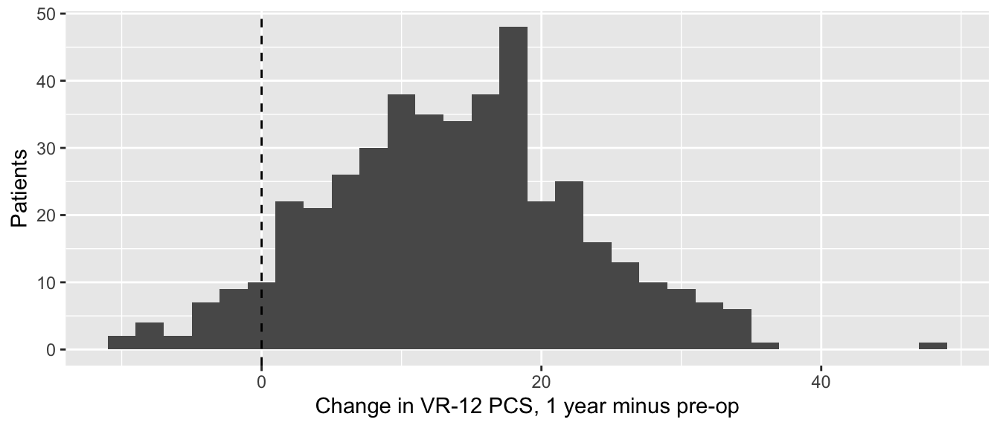
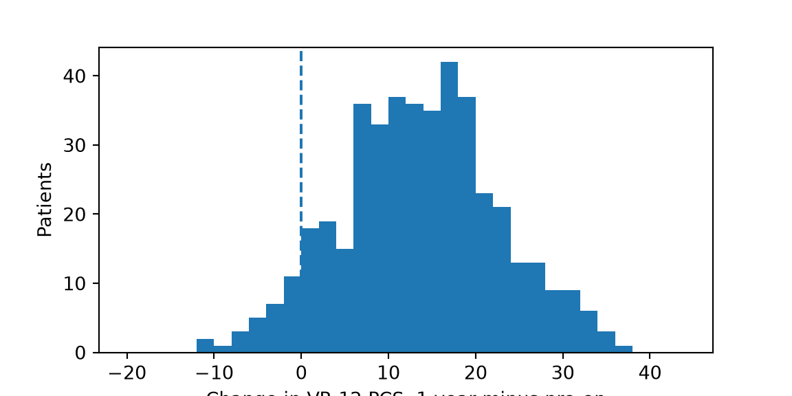

Paired t test, Wilcoxon signed-rank test, McNemar’s test and stratified Cox regression: the same patients measured twice, or matched pairs.
Paired data come in twos that belong together: the same patient before and after surgery, two raters measuring the same X-ray, or two patients matched to each other on age, sex and BMI. Paired tests compare each patient with themselves (or with their match), which removes the patient-to-patient variation that unpaired tests have to wade through. If your two groups are different patients, use page 6 instead.
Note💡 How every section on this page works
Each section answers one question about the practice data. Its first code block loads the packages and the data, so you can jump straight to the section you need. Run that section’s blocks in order, top to bottom.
To keep the code short, the examples use every case, including the 80 patients who had both sides operated on. In a real study, decide how to handle them (page 3) and say what you did.
Warning⚠️ Watch out: only complete pairs count
A paired test can only use patients measured at both times. Patients who missed a visit drop out, and if they differ from the rest (for example, the patients who did badly stop coming back), the result is biased. Always report how many patients had both measurements. Mixed models can use everyone’s data, including incomplete follow-up.
Paired t test
The question: Does patients’ physical health, measured by the VR-12 physical component score (PCS), improve from before surgery to 1 year after?
When to use it
Each patient (or matched pair) gives two measurements of the same thing.
The differences between the two measurements are roughly normal, or there are about 30 or more pairs. The assumption is about the differences, not about each measurement on its own.
Pairs are independent of each other.
If the differences are skewed, or the measurements are bounded or ordinal → the Wilcoxon signed-rank test.
Look at the data first
Paired data need to be wide: one row per patient, with the two measurements side by side (page 1 shows how to reshape).
ggplot(pcs, aes(change)) +geom_histogram(binwidth =2) +geom_vline(xintercept =0, linetype ="dashed") +# no changelabs(x ="Change in VR-12 PCS, 1 year minus pre-op", y ="Patients")

import pandas as pdimport matplotlib.pyplot as pltfrom scipy import statsproms = pd.read_csv("data/proms_long.csv")pcs = (proms[proms["visit"].isin(["preop", "1yr"])] .pivot(index="case_id", columns="visit", values="vr12_pcs") # one row per patient .dropna()) # complete pairs onlypcs["change"] = pcs["1yr"] - pcs["preop"]print(len(pcs))
436
fig, ax = plt.subplots(figsize=(6, 3))ax.hist(pcs["change"], bins=range(-20, 46, 2))ax.axvline(0, linestyle="--") # no changeax.set_xlabel("Change in VR-12 PCS, 1 year minus pre-op")ax.set_ylabel("Patients")plt.show()

436 patients have both scores. The changes form a roughly symmetric bell, centered well to the right of zero.
pcs_test <-t.test(pcs$pcs_1yr, pcs$pcs_preop, paired =TRUE) # 1 year minus pre-oppcs_test
Paired t-test
data: pcs$pcs_1yr and pcs$pcs_preop
t = 31.201, df = 435, p-value < 2.2e-16
alternative hypothesis: true mean difference is not equal to 0
95 percent confidence interval:
12.81701 14.54033
sample estimates:
mean difference
13.67867
pcs_test = stats.ttest_rel(pcs["1yr"], pcs["preop"]) # 1 year minus pre-opprint(pcs_test)
t = 31.2, df = 435: the mean change is 31 standard errors away from zero; df is the number of pairs minus 1.
p < 0.001 (R prints “p < 2.2e-16”, the smallest p-value it displays): a change this large would be essentially impossible if PCS didn’t change on average.
mean difference 13.7: PCS rose by 13.7 points on average.
95% CI 12.8 to 14.5: the CI for the mean change.
Effect size and 95% CI
The mean change with its CI, in points: 13.7 (95% CI 12.8 to 14.5).
Cohen’s dz divides the mean change by the standard deviation of the changes: how consistent the improvement was across patients. The usual guide (0.2 small, 0.5 medium, 0.8 large) applies.
d (z) | 95% CI
--------------------
1.49 | [1.36, 1.63]
d_z = pcs["change"].mean() / pcs["change"].std() # mean change / SD of the changesprint(d_z)
1.4942420399763536
dz = 1.49 is a very large effect: 93% of patients’ PCS went up.
How to report it
Methods: Change in VR-12 PCS from before surgery to 1 year was assessed with a paired t test in patients with both measurements.
Results: Of 574 patients with a pre-op PCS, 436 also had a 1-year score. Mean PCS was 31.2 (SD 6.3) before surgery and 44.9 (SD 6.8) at 1 year (mean change 13.7 points, 95% CI 12.8 to 14.5; dz = 1.49; p < 0.001).
Warning⚠️ Watch out: don’t analyze paired data as unpaired
Running an unpaired t test on the pre-op and 1-year columns ignores which scores belong to the same patient. That’s wrong even when it happens to give a similar answer, because the test’s standard error assumes 872 independent patients when there are only 436. When the two measurements are correlated, as they usually are, the paired test is also more precise.
Tip🔀 R vs Python: paired effect sizes
pingouin’s compute_effsize(x, y, paired=True) does not return dz: it returns dav (the mean change divided by the average of the two SDs), 2.08 here. Both are legitimate, but they answer different questions and aren’t interchangeable. We compute dz directly so the two languages match; say which one you report.
Wilcoxon signed-rank test
The question: Did KOOS JR improve from before surgery to 1 year after knee replacement?
When to use it
Two paired measurements, and the outcome is skewed or has a ceiling or floor. The 1-year KOOS JR has a ceiling (page 3).
For an ordinal scale (satisfaction from 1 to 5), count the patients who went up and down and compare the two counts with a binomial test (the sign test, page 5).
It ranks the sizes of the changes and compares the ranks of improvements with the ranks of declines.
Changes of exactly zero carry no information about direction and are dropped.
If the changes are roughly normal → the paired t test.
koos_test <-wilcox.test(koos$koos_1yr, koos$koos_preop, paired =TRUE,exact =FALSE, correct =FALSE, # see the R vs Python boxconf.int =TRUE) # adds the Hodges-Lehmann estimate and CIkoos_test
Wilcoxon signed rank test
data: koos$koos_1yr and koos$koos_preop
V = 30381, p-value < 2.2e-16
alternative hypothesis: true location shift is not equal to 0
95 percent confidence interval:
32.29998 35.90004
sample estimates:
(pseudo)median
34.10001
# pg.wilcoxon() runs scipy's test and adds the rank-biserial effect sizekoos_test = pg.wilcoxon(koos["1yr"], koos["preop"], method="approx", correction=False) # see the R vs Python boxprint(koos_test)
V = 30381 (R): the sum of the ranks of the improvements. With 246 patients the ranks add up to 246 × 247 / 2 = 30381, so every rank belongs to an improvement. Python reports the smaller sum, the declines: W_val = 0.
p < 0.001.
(pseudo)median 34.1, 95% CI 32.3 to 35.9: the Hodges-Lehmann estimate of the typical change, below.
RBC = 1.0 (Python): the rank-biserial effect size, below.
Effect size and 95% CI
The Hodges-Lehmann estimate of the change (the median of the averages of every pair of changes), with its CI, in points.
The matched-pairs rank-biserial correlation (r): +1 if every patient improved, −1 if every patient got worse, 0 if improvements and declines balance out. Here it’s exactly 1.
r (rank biserial) | 95% CI
--------------------------------
1 | [1.00, 1.00]
# Hodges-Lehmann estimate: the median of the averages of every pair of changesdef hodges_lehmann(x): x = np.asarray(x) i, j = np.triu_indices(len(x)) # every pair, including each change with itselfreturn np.median((x[i] + x[j]) /2)print(hodges_lehmann(koos["change"]))
34.1
# scipy has no CI for it, so use a bootstrap: recompute it on 9999 resampled datasetsboot = stats.bootstrap((koos["change"].to_numpy(),), hodges_lehmann, vectorized=False, rng=np.random.default_rng(2026))print(boot.confidence_interval)
Methods: Because 1-year KOOS JR scores showed a ceiling effect, change from before surgery was assessed with the Wilcoxon signed-rank test, with the Hodges-Lehmann estimate of the change and its 95% CI as the effect size.
Results: In all 246 patients with both scores, the change was positive. Median KOOS JR was 50.0 (IQR 40.8 to 58.2) before surgery and 85.8 (IQR 75.0 to 94.0) at 1 year (Hodges-Lehmann estimate of the change 34.1 points, 95% CI 32.3 to 35.9; p < 0.001).
Warning⚠️ Watch out: “significant improvement” isn’t the whole story
A tiny p-value says the scores went up on average; it doesn’t say how many patients improved by a meaningful amount. For PROMs, also report the proportion of patients whose change reached the minimal clinically important difference (MCID), a within-patient threshold (page 3).
Tip🔀 R vs Python: Wilcoxon defaults
The statistic. R reports V, the sum of the ranks of the positive changes. scipy (and pingouin) report the smaller of the two sums. The p-values agree.
Exact or approximate. R uses an exact p-value for fewer than 50 pairs without ties and adds a continuity correction to the normal approximation; scipy’s defaults differ. We set exact = FALSE, correct = FALSE in R and method="approx", correction=False in Python so they match.
The Hodges-Lehmann CI. R computes it by inverting the test; the Python code uses a bootstrap, a different method. Here they agree to two decimals (32.30 to 35.90); on page 6 they differ a little.
McNemar’s test
The question: Are patients more likely to use a walking aid 6 weeks after surgery than before it?
When to use it
A yes/no outcome measured twice in the same patients (or once in each member of a matched pair).
It uses only the discordant pairs: the patients who changed (no → yes, or yes → no). Patients who stayed the same tell you nothing about the direction of change.
The chi-square version needs at least about 10 discordant pairs in total. With fewer, use the exact version (see the R vs Python box).
Look at the data first
For paired yes/no data, “looking” means a 2 × 2 table of before × after: each patient appears once.
print(aid[["preop", "6wk"]].mean()) # proportion using an aid
visit
preop 0.352475
6wk 0.596040
dtype: float64
Of 505 patients seen at both visits, 134 never used an aid and 108 used one at both times. The other 263 changed: 193 started using an aid and 70 stopped.
McNemar’s chi-squared = 56.6, df = 1: how lopsided the 193 vs 70 split is, compared with the even split you’d expect if walking-aid use hadn’t changed.
p < 0.001.
Effect size and 95% CI
The effect size for McNemar’s test is the discordant-pair odds ratio: patients who started using an aid divided by patients who stopped, 193 / 70. Its exact CI comes from a binomial test on the discordant pairs.
started <- aid_table["0", "1"] # no aid before, aid at 6 weeksstopped <- aid_table["1", "0"] # aid before, no aid at 6 weeksstarted / stopped # discordant-pair odds ratio
[1] 2.757143
ci <-binom.test(started, started + stopped)$conf.int # CI for the share of changers who startedci / (1- ci) # turned into a CI for the odds ratio
started =int(aid_table.loc[0, 1]) # no aid before, aid at 6 weeksstopped =int(aid_table.loc[1, 0]) # aid before, no aid at 6 weeksprint(started / stopped) # discordant-pair odds ratio
2.757142857142857
ci = stats.binomtest(started, started + stopped).proportion_ci(method="exact") # share of changers who startedprint(ci.low / (1- ci.low), ci.high / (1- ci.high)) # turned into a CI for the odds ratio
2.0871688376583153 3.6782978561318966
Patients were 2.8 times as likely to start using an aid as to stop (95% CI 2.1 to 3.7).
How to report it
Methods: Walking-aid use before surgery and at 6 weeks was compared with McNemar’s test, with the discordant-pair odds ratio and its exact 95% CI as the effect size.
Results: Among 505 patients assessed at both visits, 35.2% used a walking aid before surgery and 59.6% at 6 weeks; 193 patients started and 70 stopped using an aid (discordant-pair odds ratio 2.76, 95% CI 2.09 to 3.68; p < 0.001).
Warning⚠️ Watch out: no chi-square or Fisher’s test on paired yes/no data
A common mistake is to tabulate “aid yes/no” against “pre-op / 6 weeks” and run an ordinary chi-square test. That table counts each patient twice, as if 1010 independent patients had been studied. McNemar’s test uses each patient once, through the before × after table.
Tip🔀 R vs Python: chi-square or exact?
R’s mcnemar.test() gives the chi-square version, with a continuity correction unless correct = FALSE. statsmodels’ mcnemar() gives the exact (binomial) version unless you set exact=False. With few discordant pairs (under about 10), the exact version is the right one: in R, run binom.test(started, started + stopped).
Stratified Cox regression
The question: Among patients matched on procedure, age, sex, BMI and ASA class, is the revision risk higher with implant C than with implant A?
When to use it
The outcome is time until an event, and the patients come in matched pairs (or sets), or the two “patients” are the two joints of one person.
A Cox model stratified by pair lets each pair have its own baseline risk, and compares implants only within pairs. The decision table calls this conditional proportional hazards regression.
Only pairs in which one patient was revised while the other was still being followed tell the model anything; with few events, expect a wide CI.
The matched file has one row per patient and a set_id shared by each matched set. Each set holds one patient with each implant (A, B and C); here we keep A and C, which makes pairs.
set_id implant age sex bmi followup_years revised
0 M001 C 67 Male 32.5 5.79 1
1 M001 A 67 Male 35.3 2.44 0
3 M002 C 64 Female 31.4 0.04 1
4 M002 A 61 Female 31.3 8.67 0
pair_cox <-coxph(Surv(followup_years, revised) ~ implant +strata(set_id), data = pairs)summary(pair_cox)
Call:
coxph(formula = Surv(followup_years, revised) ~ implant + strata(set_id),
data = pairs)
n= 104, number of events= 22
coef exp(coef) se(coef) z Pr(>|z|)
implantC 1.2528 3.5000 0.5669 2.21 0.0271 *
---
Signif. codes: 0 '***' 0.001 '**' 0.01 '*' 0.05 '.' 0.1 ' ' 1
exp(coef) exp(-coef) lower .95 upper .95
implantC 3.5 0.2857 1.152 10.63
Concordance= 0.778 (se = 0.139 )
Likelihood ratio test= 5.88 on 1 df, p=0.02
Wald test = 4.88 on 1 df, p=0.03
Score (logrank) test = 5.56 on 1 df, p=0.02
pair_cox = CoxPHFitter().fit( pairs[["followup_years", "revised", "implant", "set_id"]], duration_col="followup_years", event_col="revised", formula="implant", strata=["set_id"], # one stratum per matched pair fit_options={"precision": 1e-9}, # stop only when fully converged; see the R vs Python box)print(pair_cox.summary[["exp(coef)", "exp(coef) lower 95%", "exp(coef) upper 95%", "p"]])
n = 104, number of events = 22: 52 pairs, 22 revisions.
exp(coef) = 3.5: the hazard ratio, implant C vs implant A, within pairs.
lower .95 = 1.15, upper .95 = 10.63: its 95% CI. Wide, because only 22 revisions inform it.
Pr(>|z|) = 0.027: the p-value for implant.
R also prints a likelihood ratio, Wald and score test for the whole model; with one predictor they all test the same thing.
Effect size and 95% CI
The hazard ratio is the effect size: within matched pairs, the hazard of revision was 3.5 times as high with implant C (95% CI 1.15 to 10.63).
How to report it
Methods: Revision risk was compared between implants in matched pairs using Cox regression stratified by pair.
Results: In 52 pairs matched on procedure, age, sex, BMI and ASA class, 17 implant C and 5 implant A procedures were revised (hazard ratio for implant C vs A 3.50, 95% CI 1.15 to 10.63; p = 0.027).
Warning⚠️ Watch out: don’t ignore the matching
An ordinary Cox model on the same 104 patients (without strata()) treats them as unrelated. That throws away the matching you worked to create. Here it gives a slightly different answer (hazard ratio 3.60); with stronger matching factors the difference can be large. Analyze matched data as matched.
Tip🔀 R vs Python: strata and convergence
R puts strata(set_id) in the model formula; lifelines takes strata=["set_id"] as a separate argument. With so few events and many strata, lifelines’ default convergence rule stops a little early (a hazard ratio of 3.4997 instead of 3.5), so we tighten it with fit_options={"precision": 1e-9}.
Exercises
The solutions use the packages and data loaded in the sections above, so run the page from the top first.
1. Repeat the paired t test for the VR-12 mental component score (vr12_mcs), pre-op vs 1 year. Report the mean change with its 95% CI and dz.
Paired t-test
data: mcs$mcs_1yr and mcs$mcs_preop
t = 5.8718, df = 435, p-value = 8.569e-09
alternative hypothesis: true mean difference is not equal to 0
95 percent confidence interval:
2.290768 4.595930
sample estimates:
mean difference
3.443349
Results: The mean change in MCS from before surgery to 1 year was 3.4 points (95% CI 2.3 to 4.6; dz = 0.28; p < 0.001).
That’s a small effect, and much smaller than the physical component’s 13.7 points.
2. Two raters measured the hip-knee-ankle (HKA) angle on the same 60 knee X-rays (radiographic_reliability.csv, session 1). Does rater 2 measure systematically higher than rater 1? Choose the test and run it.
TipSolution
Two measurements of the same X-ray are paired, and HKA angles are measurements that are roughly normal: the paired t test.
Paired t-test
data: readings$R2 and readings$R1
t = 2.3578, df = 59, p-value = 0.02172
alternative hypothesis: true mean difference is not equal to 0
95 percent confidence interval:
0.0761762 0.9304905
sample estimates:
mean difference
0.5033333
Results: The mean difference between rater 2’s and rater 1’s readings was 0.50° (95% CI 0.08° to 0.93°; p = 0.022).
A systematic difference this small may not matter clinically; page 17 shows how to judge agreement between raters properly.
3. Patients improve a lot in the first 3 months. Do they keep improving between 3 months and 1 year? Test it for KOOS JR and write the Results sentence.
TipSolution
KOOS JR has a ceiling at 1 year, so use the Wilcoxon signed-rank test.
Wilcoxon signed rank test
data: later$koos_1yr and later$koos_3mo
V = 21508, p-value < 2.2e-16
alternative hypothesis: true location shift is not equal to 0
95 percent confidence interval:
8.200009 11.600000
sample estimates:
(pseudo)median
9.949962
Results: Between 3 months and 1 year, the change in KOOS JR was positive in 176 of 225 patients and negative in 46. The median was 73.1 (IQR 65.4 to 81.5) at 3 months and 85.2 (IQR 73.6 to 93.8) at 1 year (Hodges-Lehmann estimate of the change 9.9 points, 95% CI 8.2 to 11.6; rank-biserial r = 0.74; p < 0.001).